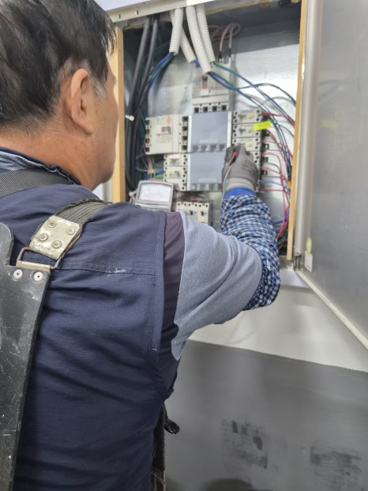
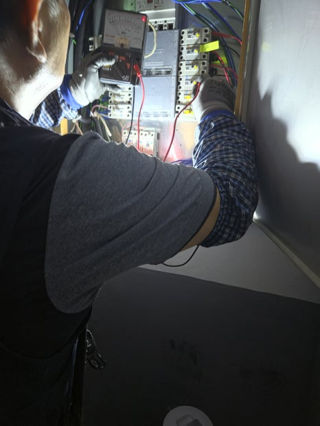
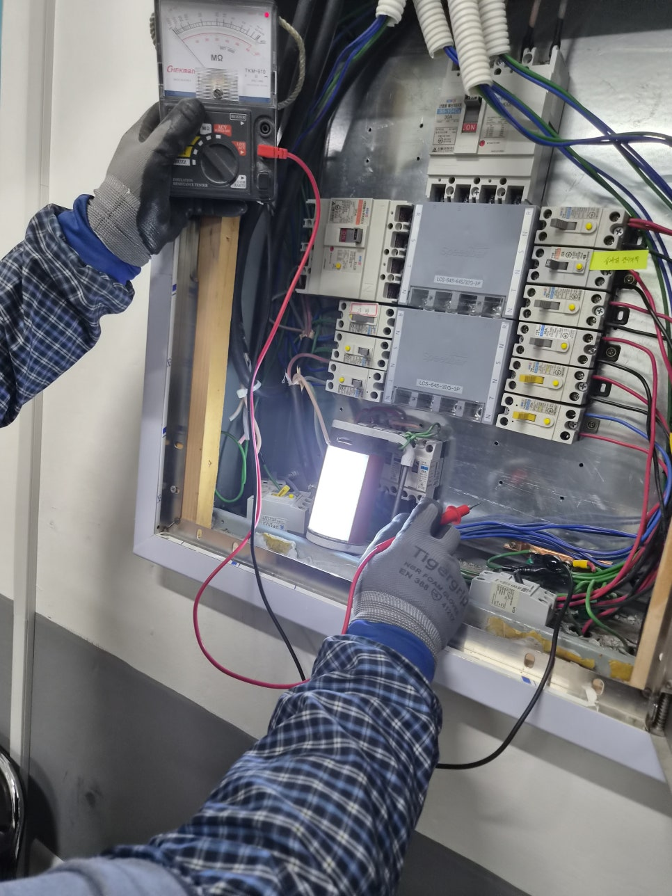
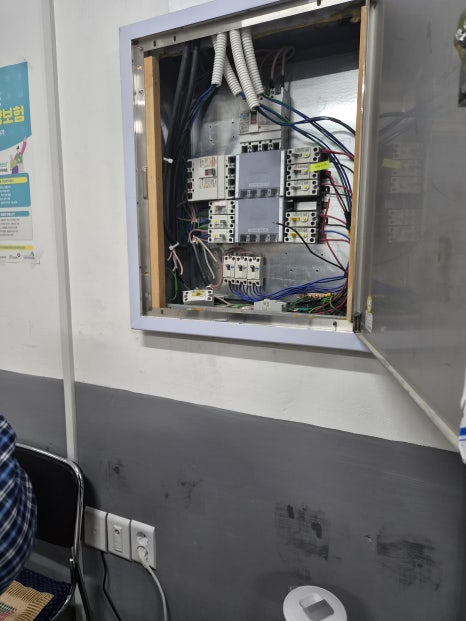
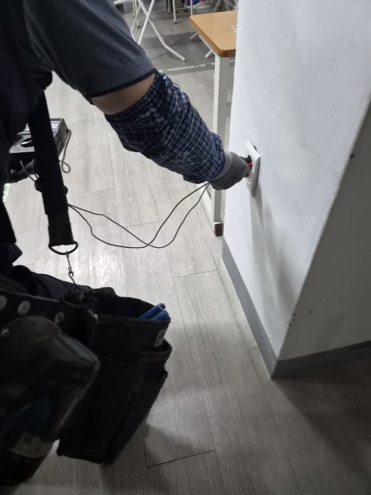
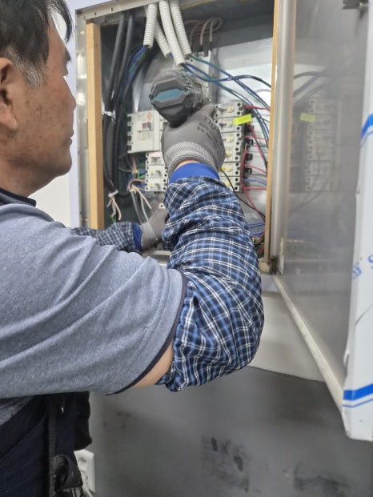

현장 요약
울산 북구 호계동 교육원 정전 현장에서 분전반과 누전차단기 상태를 확인하고, 원인 점검부터 교체 후 통전 확인까지 안전하게 마무리한 사례입니다.
호계동 교육원에서 전체 전기가 멈췄다는 연락을 받고 현장으로 갔습니다. 수업이 진행되는 공간은 조명과 콘센트가 바로 복구되어야 하므로, 단순히 스위치를 다시 올리는 방식으로는 해결할 수 없다고 판단했습니다.
먼저 분전반을 열어 메인 차단기와 각 회로의 흐름을 확인했습니다. 전기가 끊긴 원인이 외부 공급 문제가 아니라 차단기 내부와 연결부 쪽 이상으로 이어질 가능성이 보여, 무리한 통전보다 원인 확인을 우선했습니다.
계측기로 누전 여부와 단락 가능성을 확인하면서 문제가 되는 구간을 좁혀갔습니다. 오래 사용한 차단기는 겉으로는 멀쩡해 보여도 내부 접점이 약해질 수 있어, 현장 사용량과 회로 구성을 함께 보고 교체 범위를 정했습니다.
기존 누전차단기를 정리한 뒤 현장에 맞는 규격으로 교체하고, 배선 체결 상태를 다시 맞췄습니다. 교체 후에는 바로 마무리하지 않고 교육원 내부 콘센트와 분전반 동작을 순서대로 확인해 같은 문제가 반복될 가능성을 줄였습니다.
전원을 다시 올렸을 때 조명과 전기 사용이 정상으로 돌아오는 것을 확인했습니다. 전기 문제는 보이지 않는 곳에서 시작되는 경우가 많기 때문에, 정전이나 차단기 내려감이 반복된다면 빠르게 점검받는 것이 가장 안전합니다.
이미지 갤러리
현장 확인, 작업 과정, 마무리 순서로 사진을 정리했습니다.





